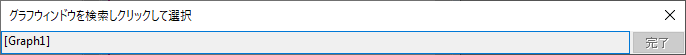

ワークブックウィンドウは最小1シート、最大で1024シートまで作成することができます。
シートの前後移動ナビゲーションボタンに加えて、ワークブックにはシート追加ボタンとオーガナイザを表示/非表示ボタンがあります。
ワークシートを非表示にするには、
非表示になると、ワークシートはワークブックオーガナイザとオブジェクトマネージャでグレー表示されます。どちらもエクスポートには表示されません。
非表示のワークシートを表示する
Note:
|
シートタブを右クリックして挿入または、削除、追加を選択し、現在のシートの前に新しいシートを挿入、現在のシートを削除、最後のシートとして新しく追加できます。
シートタブを右クリックしてグラフをシートとして追加またはシートとして行列を追加を選択すると、取得ダイアログが開き、追加したいウィンドウをクリックしてグラフや行列ウィンドウを現在のワークブックウィンドウの新しいシートとして追加します。

シートタブを右クリックしてシートにメモを追加を選択して、現在のワークブックの新しいシートとしてノートウィンドウを追加できます。
Origin 2018bから、全ての情報を含む現在のシート(ヘッダ行や構造も併せて)をクリップボードにコピーし、タブ上で右クリックしてシートをコピーを選択し、新しいシートとして貼り付けを選べば、新規のワークシートとして追加できます。
シートをコピーを選択したら、以下の操作が可能です。
シートタブで右クリックし、データなしで複製または複製を選択すると、現在のワークシートをデータなし/データ付きで複製できます。
データなしで複製を選択すると、同じ構造とヘッダ行のデータがないワークシートが作成され、現在のワークブックの最終シートとして追加されます。
Origin 2020から、シートを複製するためにデータ無しで複製を選択した場合、元データのみが削除され、セル参照やセルの式などセルにリンクした内容は、後で使用するために保持されます。以前のようにセルにリンクした内容も削除するように戻すには、システム変数@DkLを使用します。
複製を選択すると、全く同じワークシートが現在のワークブックの最終シートとして追加されます。
さらに、ワークシートに追加できるプレーンテキストのノート (ここで説明) に加えて、Originのプロジェクトにはメモを追加できる場所が他にもいくつかあります。そのうちの3つである、フォルダノート、セルノート、独立したノートウィンドウでは、テキストや画像といった混合オブジェクトおよびOriginリッチテキストなどの複雑な書式設定が可能です。 |
シートタブで右クリックして、名前とコメントを選択すると、名前とコメントダイアログが開き、現在のワークシートの名前とコメントを管理できます。
現在のワークシートの選択を解除したい場合、ワークシートの左上のセルをクリックします。もしくはワークシート列の右側の灰色の部分をクリックします。”黒い矢印”のカーソルはワークシート全体を選択する際に使われることに注意してください。 |
シートタブを右クリックして、作図ダイアログから除外を選択すると、作図のセットアップやレイヤ内容等の作図ダイアログから現在のシートを除外します。
現在アクティブなシートでLabTalkコマンドwks.epd = 1;を実行して、この操作を実行することもできます。
さらに、この操作を複数のシートに対して一度に実行することもできます。
シートを除外にすると、システム変数@TCEで設定された色でシート名が表示されます。
シートタブで右クリックして、コンテクストメニューからExcelエクスポートから除外するをクリックして、ワークブック全体をエクセルファイルとしてエクスポートする対象から除外します。
シートタブで右クリックして移動を選択すると、現在のワークブック内のワークシートの管理に使用されるワークシートの操作ダイアログが開きます。このダイアログについての詳細は、このページを参照してください。
Ctrl キーを押してマウスの上下スクロールでワークブック内の現在のワークシートを拡大、縮小できます。また、ズームツールバー を使用すると、割合を指定してワークシートの列と行の拡大または縮小が可能です。
を使用すると、割合を指定してワークシートの列と行の拡大または縮小が可能です。
ワークシートのパンは、ズームとパンイングツールボタン をクリックすると有効になり、マウスの左ボタンをクリックしながら水平または垂直方向にドラッグします。
現在のワークシートにグラフを埋め込んでいて、このグラフがワークシートワークスペースを超えて完全に表示できない場合、表示：グラフの配置メニューを選択で、グラフを元のように表示できます。